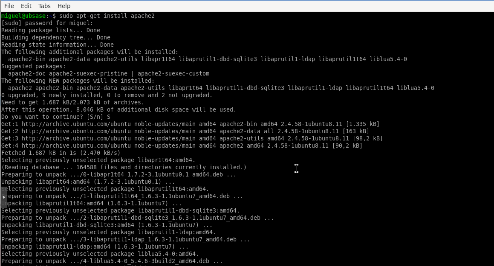
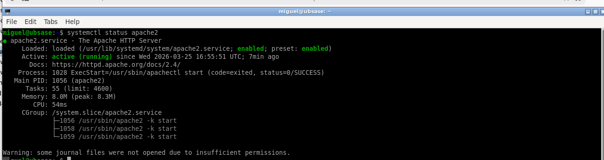
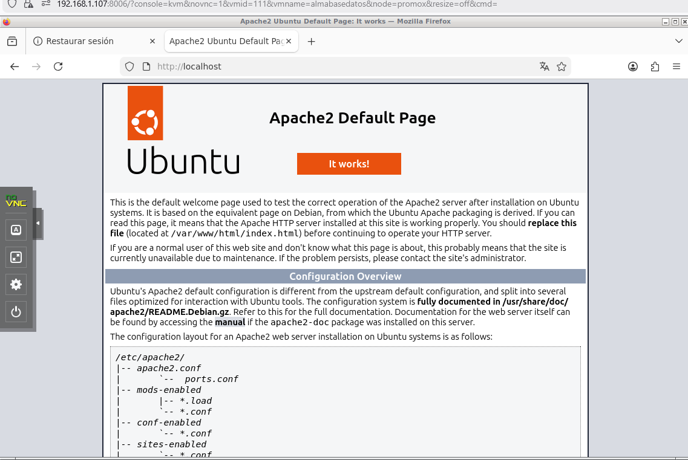
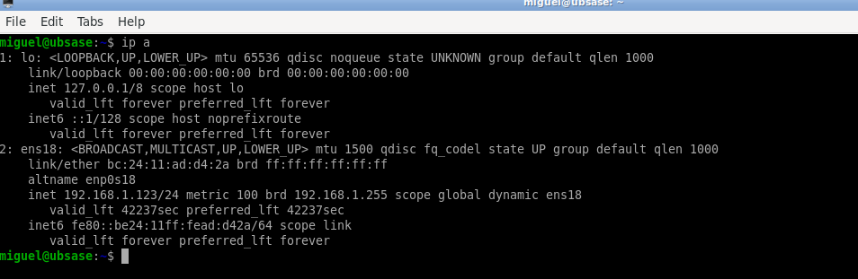
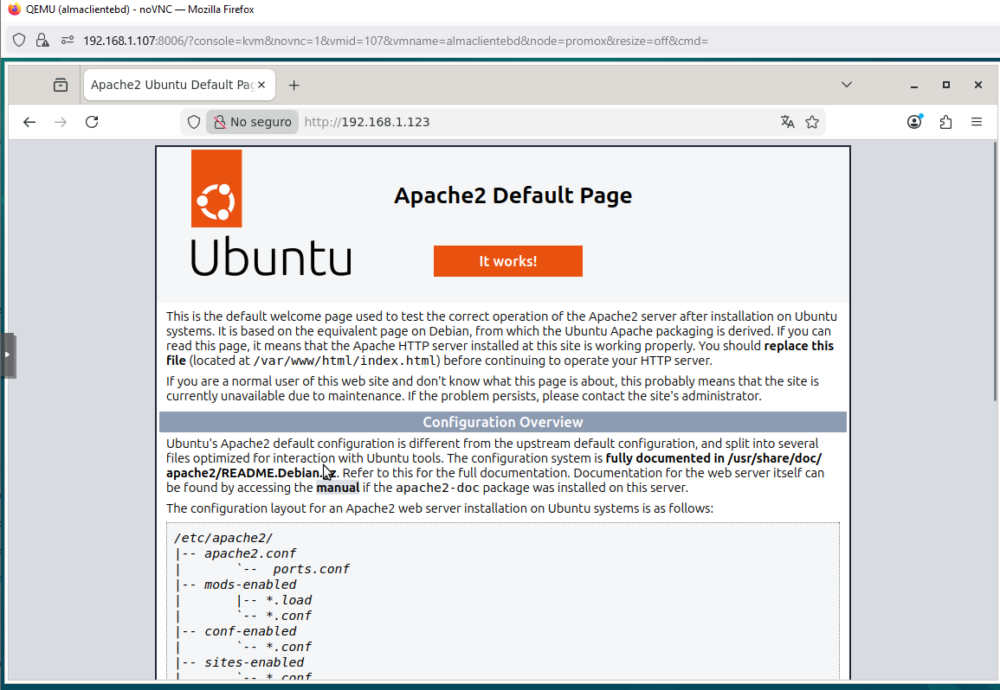

En esta práctica se instala el servidor web Apache en Ubuntu Server y se verifica su correcto funcionamiento tanto en local como desde otro equipo.
Apache es un servidor HTTP encargado de servir páginas web, siendo una pieza fundamental en entornos de bases de datos y aplicaciones web.
Se instala Apache mediante el siguiente comando:
sudo apt-get install apache2
Este proceso descarga e instala automáticamente el servidor web junto con sus dependencias.

Captura ABD1: Instalación de Apache completada.
Una vez instalado, se verifica que el servicio está activo con:
systemctl status apache2
El estado correcto debe aparecer como: active (running).

Captura ABD2: Servicio Apache activo.
Se abre un navegador dentro del servidor y se accede a:
http://localhost
Si Apache funciona correctamente, se mostrará la página por defecto.

Captura ABD3: Página web de Apache en local.
Para acceder desde otro equipo, primero se obtiene la IP con:
ip a
Se debe identificar la dirección IP asignada a la máquina.

Captura ABD4: Dirección IP del servidor.
Desde otro equipo de la red, se accede mediante:
http://IP_DEL_SERVIDOR
Si todo está correctamente configurado, se mostrará la misma página de Apache.
Es necesario que la máquina esté en modo red Adaptador puente.

Captura ABD5: Acceso remoto a Apache.
Apache ha sido instalado y verificado correctamente tanto en local como en remoto.
Se ha comprobado que el servidor está activo y accesible desde otros equipos, lo que confirma que el servicio funciona correctamente.
Este paso es fundamental para continuar con la instalación del entorno completo de bases de datos (MySQL y PHP).